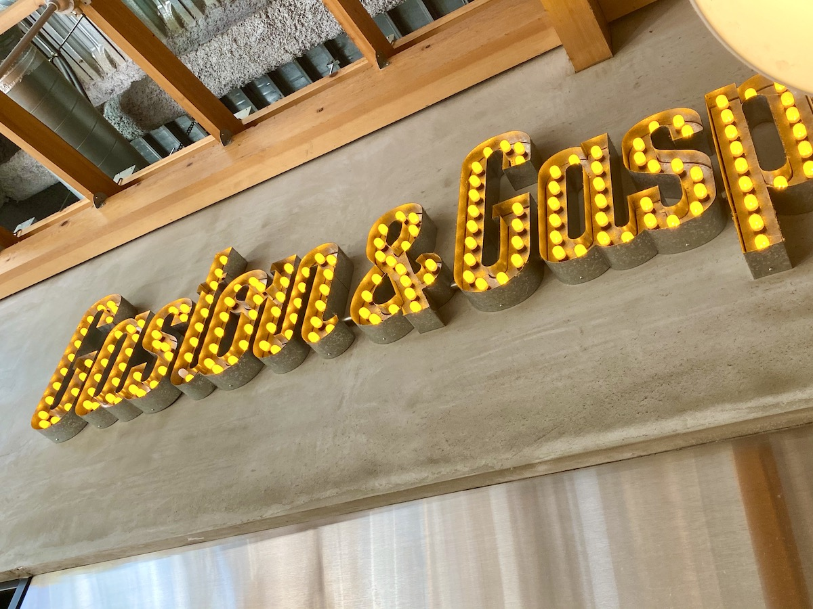
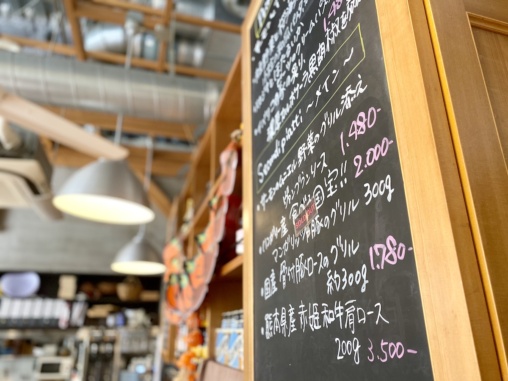
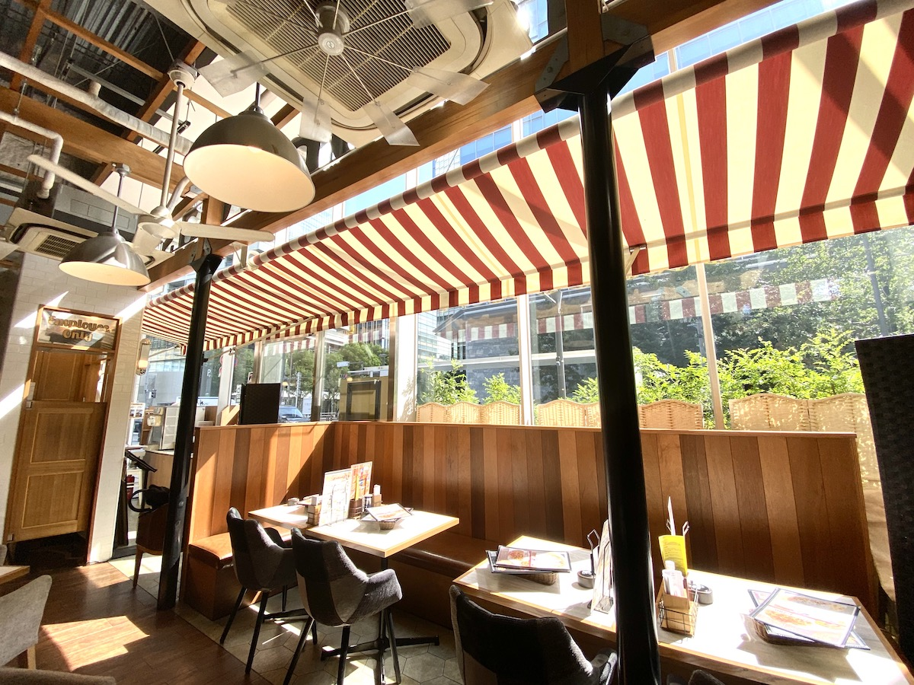

リスクがなく、やらない理由がない。共に大きく成長することに期待。
Gaston&Gaspar六本木 代表取締役社長 渡邊 正都 様
お店（御社）の紹介をお願いします
約8年前にスタートした当店は、自由にカスタマイズができるパスタ＆サラダクリエーションのお店としてミッドタウンや美術館を利用されるお客様などに利用してもらっています。お得にお酒を飲んだり、食べたりでき、色々な使い方ができるところが特徴で、女性や若い方だけでなく、誰もが自分の家のように使えるお店です。
今まで御社では広告や販促に関してどのような課題がありましたか？
既存の媒体による広告効果が薄れてきていると感じています。5万円出したから何件取れる。10万円出したから何件取れる。というわけにはいかなくなってきています。
シンクロライフは御社のどんな課題を解決できそうでしたか？
1つは媒体からeコマースに世の中が移行してきている中で、その流れにマッチしているところですね。さらに、そこに口コミ要素とAIレコメンド機能が備わっているところに期待できると思いましたね。
加盟店サービスのスタート時に加盟店となることに不安はありませんでしたか？
一緒にこのサービスを伸ばしていきたいと思いましたね。弊社は新しいものに早いタイミングで取り組み、一緒に大きくなることを目指すことが多いのですが、その中でチャレンジしがいがあるなと。
渡邊様が見てきたグルメサービスとシンクロライフは何が違いますか？
一つ目はポイントではなく暗号通貨（※１）を使うところです。夢があって面白いと思います。
二つ目は良い口コミが生まれやすいところがあり、これは今後も続けてほしいですね。
最後はレコメンド機能です。通常は全ユーザーの平均値を使いますが、そうではなくAさんはAさん、BさんはBさんの評価が見れて、かつ過去の傾向などからAIがレコメンドをしてくれるところが面白いですね。
シンクロライフのCRM機能に期待していることは何ですか？
ライトな会員を獲得する手段になりうると思っています。
熱狂的なファンを作るためのサービスやCRM機能も必要だと思いますが、その手前のわざわざ会員登録まではしないですが、お店に好意を持ってくれている人たちにも再来店してほしい。そういう人たちにうまくアプローチできればいいですね。
レジ周りのオペレーションが1つ増えると思いますが、その辺りはいかがですか？
レジの操作と比べて難しいわけでもない。既存のオペレーションの中に十分組み込める範囲だと思います。
フィー5%の完全成功報酬型についてどう思われますか？
お店側にとっては負担は少なければ少ないほどいいのですが、サービス提供者への利益と、ユーザーへの暗号通貨（※１）還元を考えると妥当です。
今後シンクロライフへ期待することはなんですか？
ツイッターやインスタグラムと言われて連想される有名人がいるように、シンクロライフと言えばこの人。というユーザーが出てきてほしいですね。
これから検討される飲食店に向けて何かあればお願いします。
早く早く取り組んだ方が、サービスが急拡大する時の波に乗れると思います。やらない理由が見つからないので、現金商売だから面倒くさいなどはあると思いますし、集客が出来なければ意味がありませんが、そこはこれからもちろん伸びるサービスだと思います。
※１）日本では現在ロイヤリティポイントとして扱われており、将来「シンクロコイン（SYC）」へ1対1で交換可能となる予定です。